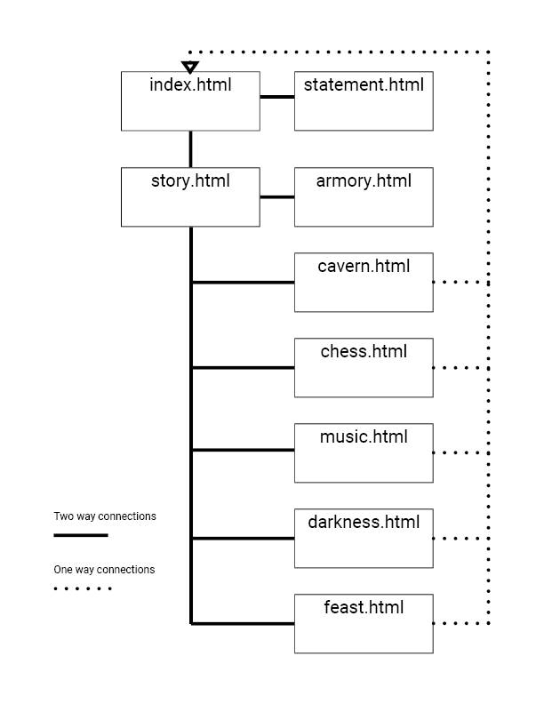

Statement
Title
Journey to the Mysterious Ruins
Column A
A Website that is a kind of game (A game which is also an artwork).
Column B
Option 2, 3c (merriam-webster's 3rd definition, sub-definition c, "the act or an instance of playing on words or speech sounds.")
Option 2, 4a1 (merriam-webster's 4th definition, sub-definition a1, “an act, way, or manner of proceeding : MANEUVER”)
Column C
Bogost - Ian Bogost's chapter, "The Rhetoric of Video Games"
P 120.” imposing rules does not suffocate play, but makes it possible in the first place.”
P 125.” assembling particular rules that suggest a particular function of a particular system characterizes procedural rhetoric.”
Column D
We chose the javascript orientated option, but we have a total of 9 webpages with at least 5 A2 js categories used across them.
Articulation
This puzzle hunt was designed to tell a story with the moral of “never judge a book by its cover”. It had a theme of subverting expectations and turned the artform of a narrative into a game.We approached this by thinking of ways we could take puzzles or ideas and changing them so that the answers to them were not what you would think they were at first glance, and get the user to think of outside-the-box methods for the correct answer. In the puzzles, we tried to get the user to think critically of every element to them, even hiding hints within images or text that would seem to only be important to the story.
We also integrated the moral into the story itself by adding story elements, like the “treasure” that the adventurers find not being actual treasure, such as gold or gemstones. Instead, they find something that at first seems like it has little or no value, but in reality, holds a lot of value, in this case sentimental value, to someone else.
The story page together with the puzzles serve to create the rule bound play that pushes a rhetoric like Bogost describes, and sticks with the definitions of play that inspired us with its play on words (the concept of deception) and the linear method of proceeding where you had to complete a puzzle to access the next. The site remembers your progress allowing you to pick up whenever for a special one time experience.
Continuing the articulation will be a segment about how each individual puzzle captures and presents the theme and ideas we have previously covered as well as a walkthrough.
Walkthrough
Beginning with the 1st puzzle, the puzzle was meant to start off as a brief introduction to play. You had rules which could be easily guessed such as the swords needing to be aligned, and then the more obscure rule that the swords still needed to be reordered to spell “CAPITAL LETTERS”. This would then create a final rule to look at capital letters in the text for the final answer of “SHROUD”. It had a very precise order to follow, with both obvious and hidden rules for players to discover on their own, turning a match the halves minigame into something more.
The 2nd puzzle involved pushing the block to the end of the cavern. It had the obvious rule of pushing the block to the end, before discovering the hidden rule to use the block’s path as a hint to get shapes. The hints surrounding the name of the cavern served to tie the shapes to the board game Blokus. By looking up the names of the shapes, you would have found the sequence of “V5, L4, 2, N”. The final line of the accompanying text guided you to website https://www.color-blindness.com/color-name-hue where if you keyed in the sequence converted to RGB alphanumerical values, (225, 124, 214) you would get the colour name “ORCHID” as your final answer. This one required a very specific manner of proceeding and represented the fact that you could not just take a push the block game at face value.
The 3rd puzzle was designed by Jeffrey. Single move checkmates would place the moves on the squares “C4,B4,G3” which would be Leetspeak for the word “CABBAGE”.
The 4th puzzle was designed to show that play should not only be linear like the previous puzzles but allow the players to decide their own routes. The puzzle was simple, with every clue pointing to the final answer. The first line described the symbol for half-life. The second line described the video game half-life made by the popular company Steam. The third line describe the half life franchise having a 1 and a 2 in the game series, but like the other games by steam, never carried a 3 in their name. The fourth and final line referenced the audio clue that contained the notes “CAGED” (Also shown in the picture introducing the puzzle on the story page). This was a fan game based on the half life series of games. Solving any one of these could have led you to the final answer of “HALF LIFE”.
The 5th puzzle is not really a puzzle, but there are hints that the mouse pointer would show you the way in the text.
The final puzzle was supposed to show an intentioned design process. By requiring the player to utilise answers they had obtained earlier, it shows the players that their efforts are not just wasted. By following a series of steps, the players get to literally play with the words in a very rule bound manner. This creates a unique self-guided play experience where the players must find and apply the right rules to the right tools. After going through the steps, you would end up with the words “NEVER, JUDGE, BOOK, COVER”. With hints from the text implying the final answer was an idiom, the words would eliminate “don’t judge a book by its cover” in favour of “NEVER JUDGE A BOOK BY ITS COVER” as the final answer. If you just tried to input “NEVERJUDGEBOOKCOVER” we would also have accepted though.
Javascript Requirement
Aside from the index and statement pages, every other page contributes to fulfilling the JavaScript requirements. They are:
- story.html
- armory.html
- cavern.html
- chess.html
- music.html
- darkness.html
- feast.html
These fufilled the categories of:
- If Statement(s) enabling different responses to typed user input from prompts (or forms)
- armory.html
- cavern.html
- chess.html
- music.html
- feast.html
- Loops going beyond the simplest while loop example
- story.html
- armory.html
- cavern.html
- chess.html
- music.html
- feast.html
- Keypresses
- cavern.html
- Div interactions
- story.html
- darkness.html
- JS Cookies
- story.html
- armory.html
- cavern.html
- chess.html
- music.html
- darkness.html
- feast.html
- Mouse event interactions
- armory.html
- chess.html
- darkness.html
Sitemap Diagram
Credit
https://www.w3schools.com/howto/howto_js_draggable.asp to learn about the js for dragging divs.
https://levelup.gitconnected.com/use-javascript-to-make-an-element-follow-the-cursor-3872307778b4 to learn about divs following a cursor.
Work allocation:
- Puzzles 3,5 by Jeffrey.
- Puzzles 1,2,4,6 by Isaac.
- Story parts written by respective puzzle authors.
- Design adapted from Isaac's A1.
Isaac Siaw & Jeffrey